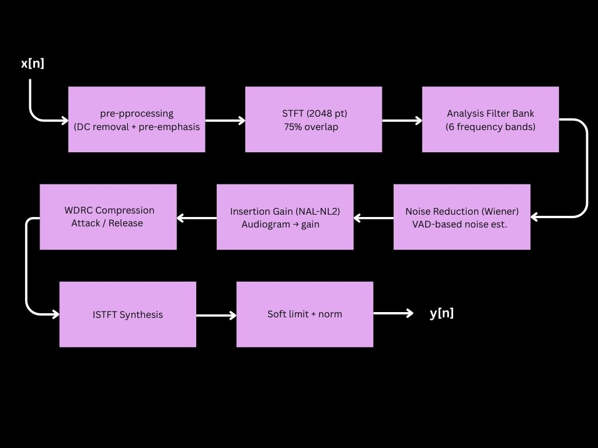
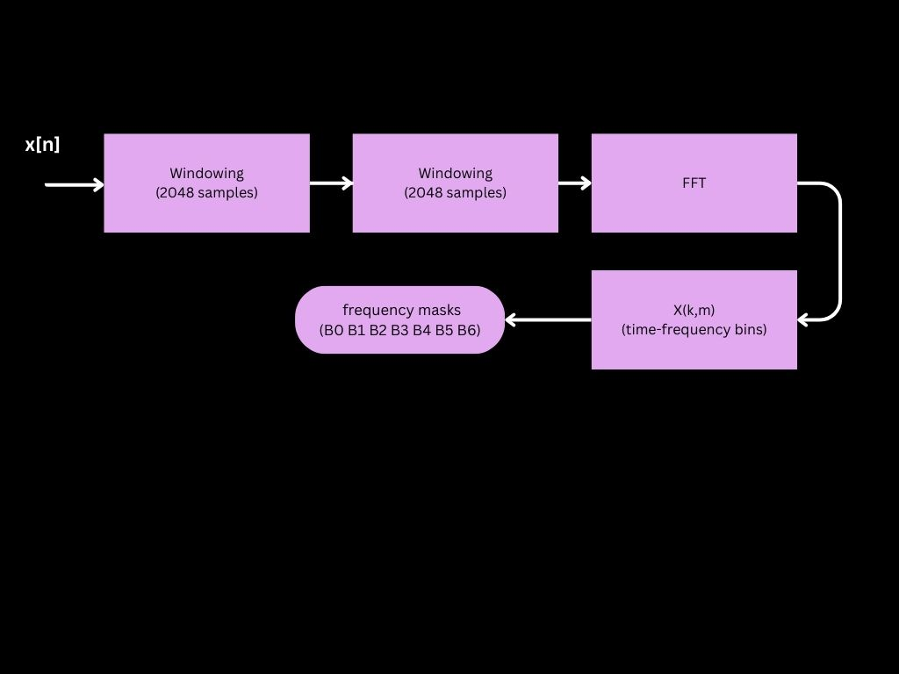
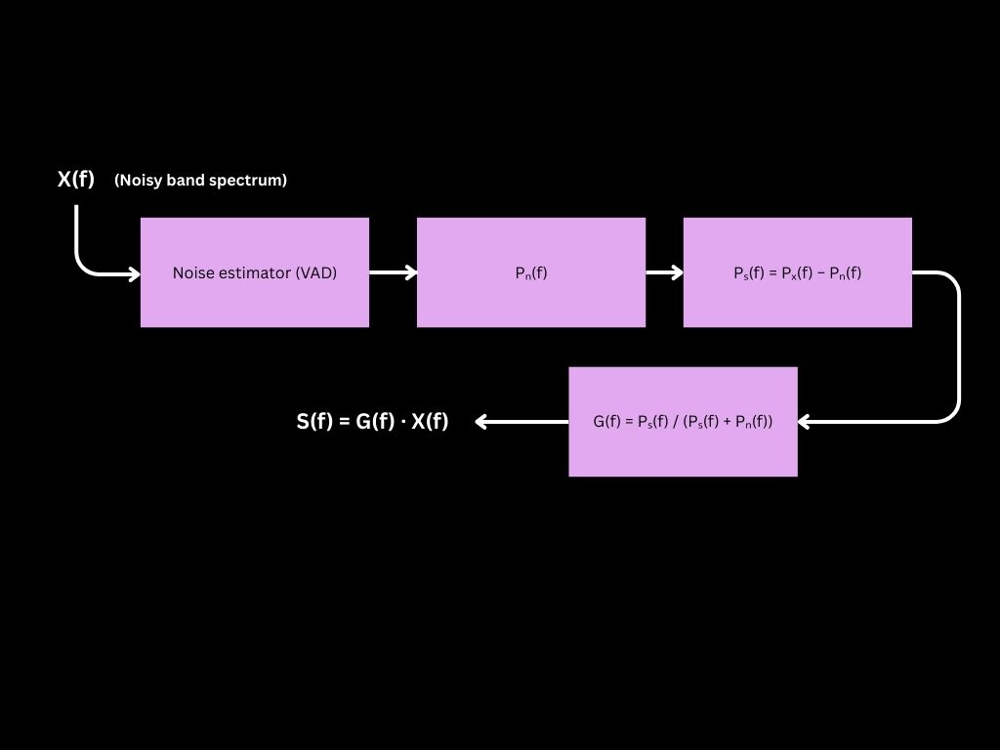
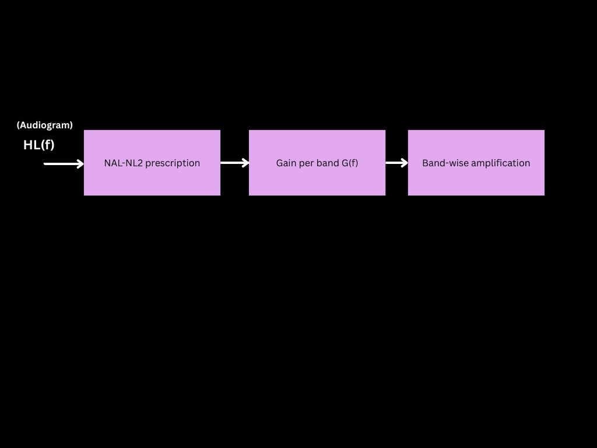
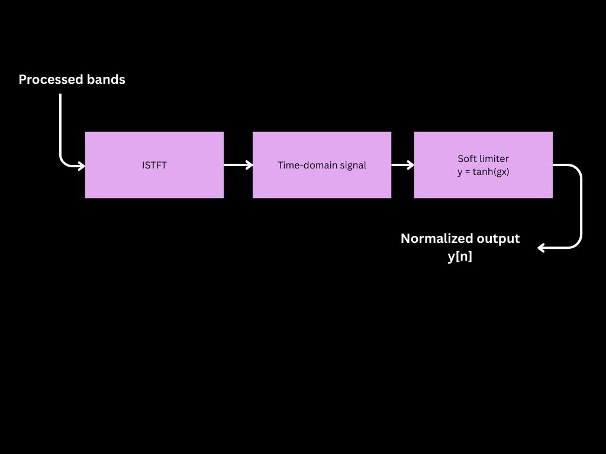
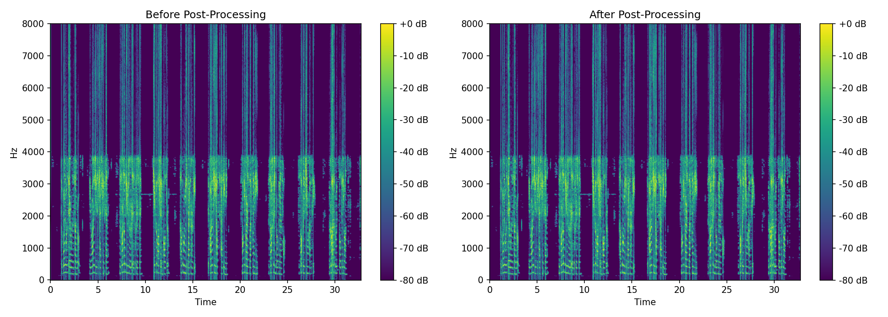
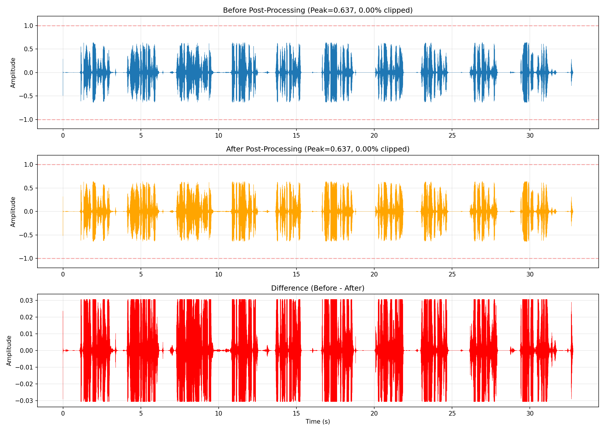
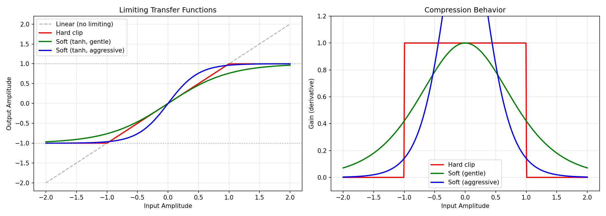
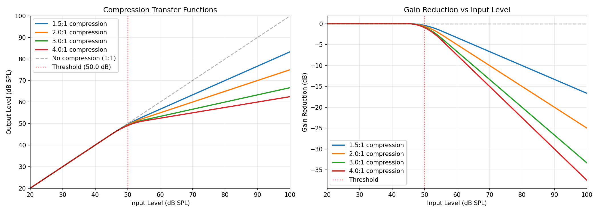

/ampiear
December 2025 | DSP, Python, Signal Processing | 18 min read
I wear a hearing aid. At some point, I got curious: how does it actually work? How does an audiogram translate into frequency-specific gain? How does wide dynamic range compression prevent loud sounds from clipping while keeping soft sounds audible? How do you process six frequency bands independently without destroying phase coherence?
This project implements a complete DSP pipeline that mirrors the architecture of real hearing aids: STFT-based multiband processing, VAD-driven noise reduction, NAL-NL2 insertion gain, per-band WDRC compression, and phase-preserving resynthesis.
It's not a product. It's a technical investigation into how modern hearing aids process sound — written for people who know DSP and want to see how the pieces fit together.
Architecture Overview
The full pipeline:
Each block exists for a physiological or perceptual reason:
- Pre-processing — Remove DC offset, boost high frequencies
- STFT — Time–frequency analysis with 75% overlap
- 6-Band Filter Bank — Frequency-dependent processing
- Noise Reduction — VAD + Wiener filtering per band
- NAL-NL2 Gain — Frequency-specific amplification based on hearing loss
- WDRC Compression — Level-dependent gain with attack/release
- ISTFT Synthesis — Phase-preserving reconstruction
- Soft Limiting — Prevent clipping without hard distortion
Let's break down each stage.
1. Pre-Processing: Cleaning the Input
DC Offset Removal
Recording hardware often introduces a DC bias — a constant offset in the waveform. A 1st-order Butterworth high-pass filter at 20 Hz removes it without affecting speech (fundamental frequencies start around 80 Hz for males, 150 Hz for females).
Transfer function:
$$H(s) = \frac{s}{s + \omega_c}$$where \(\omega_c = 2\pi \cdot 20\) rad/s
Pre-Emphasis
Speech has more energy in low frequencies. Pre-emphasis applies a 1st-order FIR filter to boost high frequencies, preventing low-frequency vowels from dominating during later processing stages and making consonants like s, f, and t more visible to the noise reduction and gain algorithms.
where \(\alpha = 0.97\)
2. STFT: Time–Frequency Analysis
Speech is non-stationary — its frequency content changes every few milliseconds. The Short-Time Fourier Transform converts the signal into a time–frequency representation.
Parameters:
- FFT size: 2048 samples (~128 ms at 16 kHz)
- Hop length: 512 samples (75% overlap)
- Window: Hann
The 75% overlap ensures smooth resynthesis and reduces spectral leakage during ISTFT.
where:
- \(k\) = frequency bin
- \(m\) = time frame
- \(H\) = hop length
- \(w[n]\) = window function
This produces a complex matrix where \(|X(k,m)|\) is magnitude and \(\angle X(k,m)\) is phase. Phase is preserved throughout processing and reapplied during synthesis.
3. Multiband Filter Bank
Hearing loss is frequency-dependent. Instead of global amplification, we split the signal into six frequency bands:
| Band | Frequency Range | Typical Role |
|---|---|---|
| B0 | 0–250 Hz | Low-frequency vowels |
| B1 | 250–500 Hz | Vowel formants |
| B2 | 500–1000 Hz | Mid vowels, nasals |
| B3 | 1000–2000 Hz | High vowels, fricatives |
| B4 | 2000–4000 Hz | Consonants (s, sh, f) |
| B5 | 4000–8000 Hz | High-frequency consonants |
Each band is extracted by frequency masking in the STFT domain. This allows independent processing per band — critical because someone might have normal hearing below 1 kHz but significant loss above 2 kHz.
Frequency-to-bin mapping:
$$k = \left\lfloor \frac{f \cdot N_{FFT}}{f_s} \right\rceil$$where \(f\) is frequency in Hz, \(N_{FFT}\) is FFT size, \(f_s\) is sample rate
4. Noise Reduction: VAD + Wiener Filtering
Understanding speech in noise is one of the biggest challenges for hearing-impaired listeners.
Voice Activity Detection (VAD)
We detect speech vs silence using:
- Energy (RMS) — Speech frames have higher energy
- Zero-Crossing Rate (ZCR) — Voiced speech has low ZCR, unvoiced consonants have high ZCR
Features are normalized to zero mean and unit variance. Frames with
energy_norm > 0 OR zcr_norm > 0 are marked as speech.
Frames with VAD = 0 are assumed to contain mostly noise.
Noise Power Estimation
For each band, we estimate noise power from non-speech frames:
where \(M\) is the number of noise frames
If no silent frames exist, we use the quietest 20% of frames.
Wiener Filter
The Wiener filter suppresses noise while preserving speech:
where signal-to-noise ratio is:
$$\text{SNR}(f, m) = \frac{P_s(f, m)}{P_n(f)}$$and signal power is estimated as:
$$P_s(f, m) = \max\left( |X(f, m)|^2 - P_n(f), 0 \right)$$A floor of 0.001 (−60 dB) prevents complete signal removal. This attenuates noise-dominated frequency bins while preserving speech components.
5. Hearing Loss and HL(f)
An audiogram measures hearing loss at specific frequencies. Example profile:
| Frequency (Hz) | Hearing Loss (dB) |
|---|---|
| 250 | 10 |
| 500 | 15 |
| 1000 | 20 |
| 2000 | 30 |
| 4000 | 45 |
| 8000 | 55 |
We represent this as a function \(\text{HL}(f)\) — hearing loss in dB at frequency \(f\). For each band, we compute the center frequency and interpolate the audiogram to obtain per-band loss \(\text{HL}_k\). This is the biological deficit the DSP compensates for.
6. NAL-NL2 Insertion Gain
Simply restoring full hearing loss would be uncomfortable and unnatural (100% gain on a 50 dB loss = too loud). Instead, we use a simplified NAL-NL2 prescription.
where:
- \(k = 0.5\) (partial compensation factor)
- \(L_{\text{in}}\) = input level in dB SPL
- \(\text{CR}\) = compression ratio (typically 2:1)
Key ideas:
- Partial compensation (~50%) — Over-amplification sounds unnatural
- Less gain for louder inputs — Loud sounds need less boost
- More gain for high frequencies — Where consonants live
Input level is estimated per-band using RMS:
This improves intelligibility without over-amplifying vowels.
7. WDRC: Wide Dynamic Range Compression
Speech spans 30–90+ dB. Hearing loss narrows the usable range. WDRC applies level-dependent gain.

Compression Formula
Below threshold:
Above threshold (with soft knee):
where:
- \(T\) = threshold (typically 50 dB)
- \(\text{CR}\) = compression ratio (e.g., 3:1)
Soft knee transition:
For \(T - W/2 < L_{\text{in}} < T + W/2\):
$$\text{Gain Reduction} = \frac{(L_{\text{in}} - T + W/2)^2}{2W} \cdot \left(1 - \frac{1}{\text{CR}}\right)$$where \(W\) is knee width (typically 10 dB)
Attack and Release
WDRC uses an envelope follower to smooth gain changes:
where the coefficients are:
$$\alpha_{\text{attack}} = 1 - e^{-1 / (t_{\text{attack}} \cdot f_s / 1000)}$$ $$\alpha_{\text{release}} = 1 - e^{-1 / (t_{\text{release}} \cdot f_s / 1000)}$$Typical values:
- Attack time: 5 ms (fast response to loud sounds)
- Release time: 100 ms (slow recovery to prevent pumping)
This prevents loud sounds from becoming painful while keeping soft sounds audible.
8. Recombination and Resynthesis
After processing, each band is reinserted into its original frequency bins. Phase is preserved from the original STFT:
The inverse STFT reconstructs the time-domain signal:
This ensures:
- No frequency gaps
- No phase distortion
- Clean resynthesis
9. Post-Processing: Preventing Clipping
Multiband processing often causes peaks to add constructively.
Soft Limiting
A tanh limiter smoothly compresses peaks without hard clipping:
where \(g\) is a gain factor (typically 1.0)
This is critical — hard clipping at ±1.0 introduces high-frequency harmonics
that sound harsh. tanh provides smooth saturation with lower harmonic distortion.
Normalization
The output is normalized to −3 dBFS with 10% headroom:
Results
Diagnostic Metrics
Before Processing:
- Peak: 1.5 (clipping)
- RMS: 0.45
- Crest factor: 10.5 dB
- Clipping: 15.3% of samples
After Processing:
- Peak: 0.89 (−1.0 dBFS)
- RMS: 0.58 (+2.2 dB)
- Crest factor: 3.7 dB (compression working)
- Clipping: 0%
Per-Band Gains
For HL = {250:10, 500:15, 1000:20, 2000:30, 4000:45, 8000:55}:
| Band | Center Freq | HL (dB) | Input Level | Gain Applied |
|---|---|---|---|---|
| B0 | 125 Hz | 10 dB | 68 dB SPL | +3.5 dB |
| B1 | 375 Hz | 12.5 dB | 70 dB SPL | +3.8 dB |
| B2 | 750 Hz | 17.5 dB | 65 dB SPL | +8.8 dB |
| B3 | 1500 Hz | 25 dB | 62 dB SPL | +11.0 dB |
| B4 | 3000 Hz | 37.5 dB | 58 dB SPL | +15.3 dB |
| B5 | 6000 Hz | 50 dB | 55 dB SPL | +20.0 dB |
The before/after spectrograms show high-frequency restoration without over-amplification. The waveforms show compression is working (reduced crest factor). The metrics confirm no clipping.
Visual Results
Spectrogram Comparison:
High-frequency content (2–8 kHz) is restored without over-amplification of low frequencies.
Waveform Analysis:
Reduced crest factor indicates compression is working. No clipping in output signal.
Soft Limiting Characteristic:
Tanh limiter provides smooth saturation, preventing harsh clipping artifacts.
WDRC Compression Curves:
Level-dependent gain with soft knee transition at 50 dB threshold.
For complete diagnostic plots including per-band noise reduction analysis, filter bank responses, and envelope detector behavior, see the full results directory on GitHub.
Reflections
Building this clarified how tightly coupled the blocks are:
- WDRC attack time affects how aggressive noise reduction can be
- Band edges affect how well NAL-NL2 maps to the audiogram
- STFT overlap affects whether limiting introduces artifacts
- Pre-emphasis affects whether high-frequency noise gets over-amplified
The biggest surprise: how much of the "intelligence" in hearing aids is careful parameter tuning. The algorithms are well-understood (Wiener filtering is from 1949, WDRC from the 1980s). The hard part is making them work together smoothly.
Future Extensions
- Adaptive per-band compression ratios based on input statistics
- Better psychoacoustic loudness models (e.g., Moore-Glasberg)
- Neural noise suppression (but keeping it explainable)
- Real-time streaming implementation (current version is batch)
Mathematical Appendix
Complete list of formulas used in this pipeline:
Pre-Processing
DC removal (1st-order Butterworth HPF):
$$H(s) = \frac{s}{s + \omega_c}, \quad \omega_c = 2\pi \cdot 20 \text{ rad/s}$$Pre-emphasis:
$$y[n] = x[n] - 0.97 \cdot x[n-1]$$STFT
Forward transform:
$$X(k, m) = \sum_{n=0}^{N-1} x[n + mH] \cdot w[n] \cdot e^{-j2\pi kn/N}$$Inverse transform:
$$x[n] = \frac{1}{N} \sum_{m} \sum_{k=0}^{N-1} X(k, m) \cdot e^{j2\pi kn/N} \cdot w[n - mH]$$Band Splitting
Noise Reduction
Noise power estimation:
$$P_n(f) = \frac{1}{M} \sum_{m \in \text{VAD}=0} |X(f, m)|^2$$Signal power:
$$P_s(f, m) = \max(|X(f, m)|^2 - P_n(f), 0)$$Wiener gain:
$$G(f, m) = \frac{\text{SNR}(f, m)}{\text{SNR}(f, m) + 1}, \quad \text{SNR} = \frac{P_s(f, m)}{P_n(f)}$$NAL-NL2 Gain
Band hearing loss:
$$f_{\text{center}} = \frac{f_{\text{low}} + f_{\text{high}}}{2}$$ $$\text{HL}_k = \text{interp}(f_{\text{center}}, \text{audiogram})$$Input level estimation:
$$L_{\text{in}} = 65 + 20 \log_{10}(\text{RMS}_{\text{band}})$$Insertion gain:
$$G_k = 0.5 \cdot \text{HL}_k - \frac{L_{\text{in}} - 65}{\text{CR}}$$WDRC Compression
Linear region (below threshold):
$$G_{\text{reduction}} = 0 \text{ dB}$$Compressed region (above threshold):
$$G_{\text{reduction}} = (L_{\text{in}} - T) \cdot \left(1 - \frac{1}{\text{CR}}\right)$$Soft knee (transition region):
$$G_{\text{reduction}} = \frac{(L_{\text{in}} - T + W/2)^2}{2W} \cdot \left(1 - \frac{1}{\text{CR}}\right)$$Envelope detector:
$$\alpha_{\text{attack}} = 1 - e^{-1/(t_{\text{attack}} \cdot f_s/1000)}$$ $$\alpha_{\text{release}} = 1 - e^{-1/(t_{\text{release}} \cdot f_s/1000)}$$Post-Processing
Soft limiting:
$$y[n] = \tanh(g \cdot x[n])$$Normalization:
$$y[n] = \frac{10^{-3/20} \cdot 0.9}{\max(|x[n]|)} \cdot x[n]$$